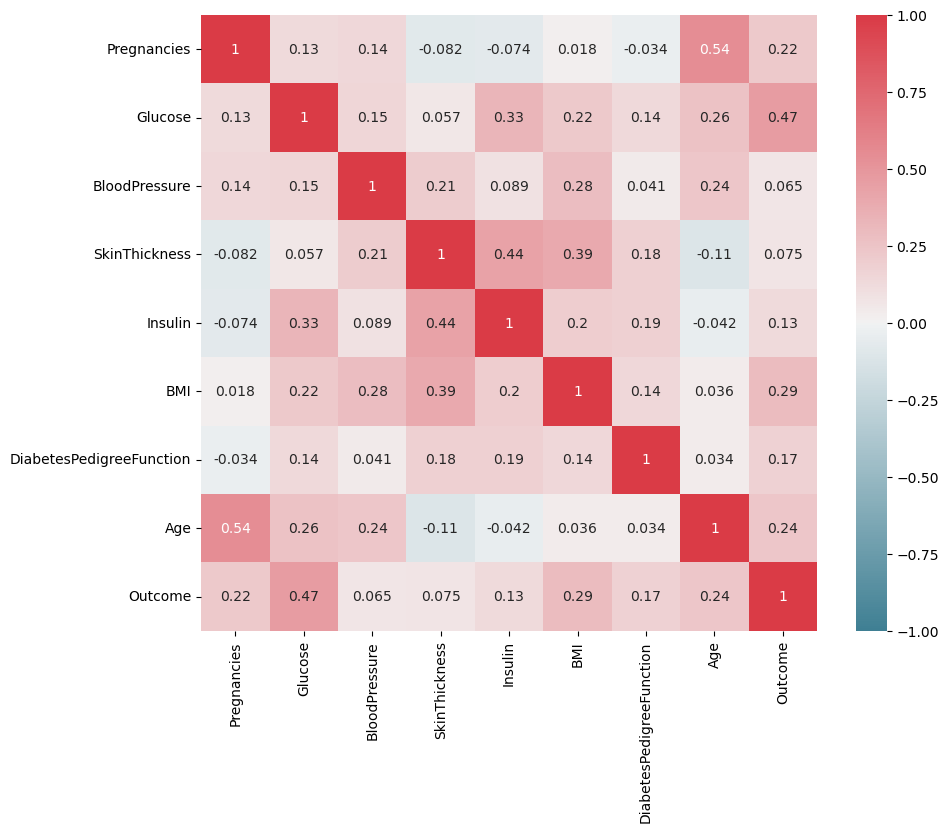
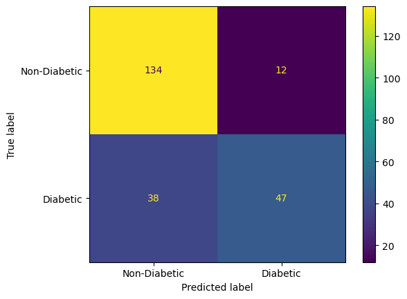
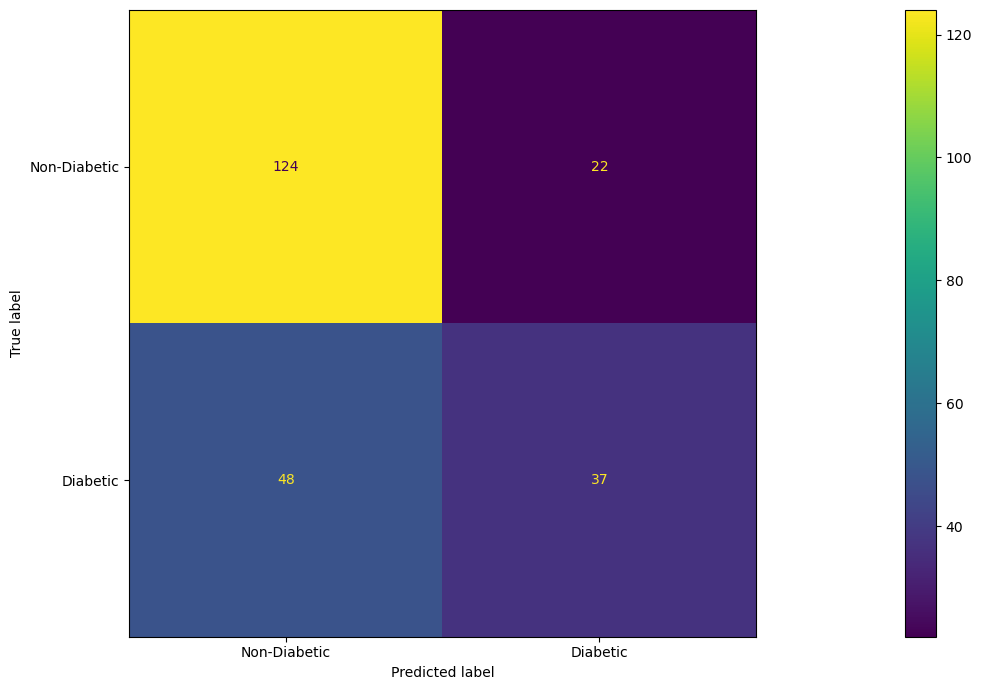
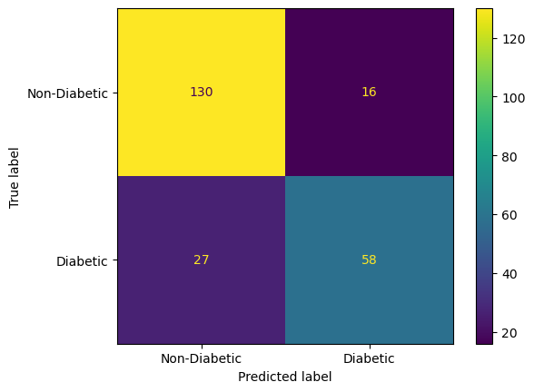
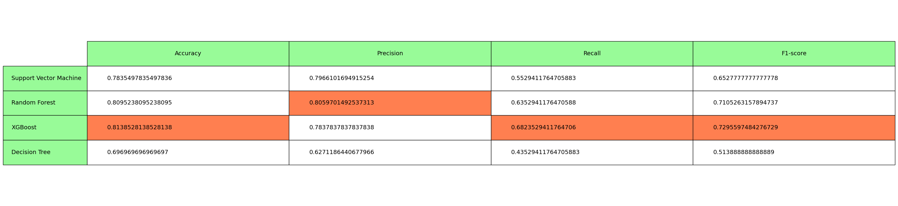

import pandas as pd
import numpy as np
import warnings
warnings.filterwarnings("ignore")df_diabetes = pd.read_csv("diabetes.csv")df_diabetes.head(10)| Pregnancies | Glucose | BloodPressure | SkinThickness | Insulin | BMI | DiabetesPedigreeFunction | Age | Outcome | |
|---|---|---|---|---|---|---|---|---|---|
| 0 | 6 | 148 | 72 | 35 | 0 | 33.6 | 0.627 | 50 | 1 |
| 1 | 1 | 85 | 66 | 29 | 0 | 26.6 | 0.351 | 31 | 0 |
| 2 | 8 | 183 | 64 | 0 | 0 | 23.3 | 0.672 | 32 | 1 |
| 3 | 1 | 89 | 66 | 23 | 94 | 28.1 | 0.167 | 21 | 0 |
| 4 | 0 | 137 | 40 | 35 | 168 | 43.1 | 2.288 | 33 | 1 |
| 5 | 5 | 116 | 74 | 0 | 0 | 25.6 | 0.201 | 30 | 0 |
| 6 | 3 | 78 | 50 | 32 | 88 | 31.0 | 0.248 | 26 | 1 |
| 7 | 10 | 115 | 0 | 0 | 0 | 35.3 | 0.134 | 29 | 0 |
| 8 | 2 | 197 | 70 | 45 | 543 | 30.5 | 0.158 | 53 | 1 |
| 9 | 8 | 125 | 96 | 0 | 0 | 0.0 | 0.232 | 54 | 1 |
print(df_diabetes.info())<class 'pandas.core.frame.DataFrame'>
RangeIndex: 768 entries, 0 to 767
Data columns (total 9 columns):
# Column Non-Null Count Dtype
--- ------ -------------- -----
0 Pregnancies 768 non-null int64
1 Glucose 768 non-null int64
2 BloodPressure 768 non-null int64
3 SkinThickness 768 non-null int64
4 Insulin 768 non-null int64
5 BMI 768 non-null float64
6 DiabetesPedigreeFunction 768 non-null float64
7 Age 768 non-null int64
8 Outcome 768 non-null int64
dtypes: float64(2), int64(7)
memory usage: 54.1 KB
Noneimport seaborn as sns
import matplotlib.pyplot as plt
f, ax = plt.subplots(figsize=(10, 8))
corr = df_diabetes.corr()
sns.heatmap(corr,
cmap=sns.diverging_palette(220, 10, as_cmap=True),
vmin=-1.0, vmax=1.0,
annot = True,
square=True, ax=ax)<Axes: >
# data with 0 value instead of null values
df_diabetes.drop(columns=['Pregnancies', 'Outcome']).isin([0, 0.0]).sum()Glucose 5
BloodPressure 35
SkinThickness 227
Insulin 374
BMI 11
DiabetesPedigreeFunction 0
Age 0
dtype: int64# storing outcomes in dataframe y, and storing pregnancies in a separate list temporarily
# instead of creating a copy of another dataframe
pregnancies = df_diabetes['Pregnancies']
y = df_diabetes['Outcome']
df_diabetes = df_diabetes.drop(columns=['Pregnancies', 'Outcome'])
# making the 0 missing values into Nan values for imputing
df_diabetes.replace(0, np.nan, inplace=True)
print(f"Number of missing values = {np.isnan(df_diabetes.to_numpy()).sum()}")
df_diabetes['Pregnancies'] = pregnancies
columns = df_diabetes.columns
df_diabetes.head(5)from sklearn.model_selection import train_test_split
from sklearn.preprocessing import StandardScaler
y = y
X = (df_diabetes).to_numpy()
# 80-20 Train-Test split
X_train, X_test, y_train, y_test = train_test_split(X, y, test_size=0.2, random_state=1)
scaling_x=StandardScaler()
X_train=scaling_x.fit_transform(X_train)
X_test_imputed=scaling_x.transform(X_test)# Imputing missing values using knn
# knn imputation transform for the dataset
from sklearn.impute import KNNImputer
# print total missing
print('Missing: %d' % sum(np.isnan(X).flatten()))
# define imputer
imputer = KNNImputer(n_neighbors=5) # taking 5 neighbours
# fit transform on the dataset for training and testing set
X_train_imputed = imputer.fit_transform(X_train)
X_test_imputed = imputer.transform(X_test)
# print total missing
X_trans = np.concatenate((X_train_imputed, X_test_imputed), axis=0)
print('Missing: %d' % sum(np.isnan(X_trans).flatten()))Missing: 652
Missing: 0df_diabetes_cleaned = pd.DataFrame(X_trans, columns = columns)
df_diabetes_cleaned.head(5)| Glucose | BloodPressure | SkinThickness | Insulin | BMI | DiabetesPedigreeFunction | Age | Pregnancies | |
|---|---|---|---|---|---|---|---|---|
| 0 | 0.478034 | -0.188555 | 0.315640 | -0.421253 | 0.708354 | -0.946901 | 0.810205 | 3.353608 |
| 1 | -0.824024 | -0.648467 | 0.695029 | -0.508571 | 0.664997 | 0.396130 | -0.695262 | -1.121017 |
| 2 | -0.189688 | -0.188555 | -0.063750 | -0.615099 | -0.693521 | -0.793670 | -1.029810 | -0.822709 |
| 3 | -0.523549 | -0.648467 | 0.600182 | -0.342666 | -0.245499 | 2.799765 | 0.057471 | -0.524401 |
| 4 | 0.044015 | 1.191181 | 0.789876 | -0.047530 | 0.433760 | -0.814702 | -0.360714 | -1.121017 |
from sklearn.metrics import accuracy_score, precision_score, recall_score, f1_score
from sklearn.metrics import confusion_matrix, ConfusionMatrixDisplay
from pprint import pprint
best_preds = []
model_names = []from sklearn.model_selection import GridSearchCV
from sklearn.svm import SVC
model_names.append('Support Vector Machine')
# Define the parameter grid
param_grid = {'C': [0.1, 1, 10], 'kernel': ['linear', 'rbf'], 'gamma': [0.001, 0.01, 0.1, 1]}
# Create an SVM model
svm_model = SVC()
# print("Current params:")
# pprint(svm_model.get_params())
svm_model.fit(X_train_imputed, y_train)
# Instantiate GridSearchCV with cross-validation
grid_search_svm = GridSearchCV(svm_model, param_grid, cv=3, scoring='accuracy')
# Fit the model to the data and perform hyperparameter tuning
grid_search_svm.fit(X_train_imputed, y_train)
# Print the best hyperparameters
# print("Best Hyperparameters:")
# pprint(grid_search_svm.best_params_)
# Get the best model
best_model_svm = grid_search_svm.best_estimator_
y_pred = svm_model.predict(X_test_imputed)
y_pred_best = best_model_svm.predict(X_test_imputed)
print("SVM without hyperparameter tuning")
print(f"Accuracy: {accuracy_score(y_test, y_pred)}")
print(f"F1 score: {f1_score(y_test, y_pred)}")
print("SVM with hyperparameter tuning")
print(f"Accuracy: {accuracy_score(y_test, y_pred_best)}")
print(f"F1 score: {f1_score(y_test, y_pred_best)}")
best_preds.append([accuracy_score(y_test, y_pred_best), precision_score(y_test, y_pred_best), recall_score(y_test, y_pred_best), f1_score(y_test, y_pred_best)])
cm = confusion_matrix(y_test, y_pred_best, labels=best_model_svm.classes_)
disp = ConfusionMatrixDisplay(confusion_matrix=cm, display_labels=['Non-Diabetic', 'Diabetic'])
disp.plot()
plt.show()SVM without hyperparameter tuning
Accuracy: 0.7878787878787878
F1 score: 0.6620689655172414
SVM with hyperparameter tuning
Accuracy: 0.7835497835497836
F1 score: 0.6527777777777778
from sklearn.ensemble import RandomForestClassifier
from sklearn.model_selection import RandomizedSearchCV
model_names.append('Random Forest')
rf = RandomForestClassifier()
# print("Current params:")
# pprint(rf.get_params())
rf.fit(X_train_imputed, y_train)
max_depth = [int(x) for x in np.linspace(10, 110, num = 11)]
max_depth.append(None)
# Create the random grid
random_grid = {'n_estimators': [int(x) for x in np.linspace(start = 200, stop = 2000, num = 10)],
'max_features': ['auto', 'sqrt'],
'max_depth': max_depth,
'min_samples_split': [2, 5, 10],
'min_samples_leaf': [1, 2, 4],
'bootstrap': [True, False]}
rf_random = RandomizedSearchCV(estimator = rf, param_distributions = random_grid, n_iter = 100, cv = 3, verbose=2, random_state=42, n_jobs = -1)
# Fit the random search model
rf_random.fit(X_train_imputed, y_train)
# Print the best hyperparameters
# print("Best Hyperparameters:")
# pprint(rf_random.best_params_)
# Get the best model
best_model_rf = rf_random.best_estimator_
y_pred = rf.predict(X_test_imputed)
y_pred_best = best_model_rf.predict(X_test_imputed)
print("RF without hyperparameter tuning")
print(f"Accuracy: {accuracy_score(y_test, y_pred)}")
print(f"F1 score: {f1_score(y_test, y_pred)}")
print("RF with hyperparameter tuning")
print(f"Accuracy: {accuracy_score(y_test, y_pred_best)}")
print(f"F1 score: {f1_score(y_test, y_pred_best)}")
best_preds.append([accuracy_score(y_test, y_pred_best), precision_score(y_test, y_pred_best), recall_score(y_test, y_pred_best), f1_score(y_test, y_pred_best)])
cm = confusion_matrix(y_test, y_pred_best, labels=best_model_rf.classes_)
disp = ConfusionMatrixDisplay(confusion_matrix=cm, display_labels=['Non-Diabetic', 'Diabetic'])
disp.plot()
plt.show()Fitting 3 folds for each of 100 candidates, totalling 300 fits
RF without hyperparameter tuning
Accuracy: 0.8095238095238095
F1 score: 0.7027027027027026
RF with hyperparameter tuning
Accuracy: 0.8095238095238095
F1 score: 0.7105263157894737from sklearn.tree import DecisionTreeClassifier
model_names.append('Decision Tree')
dt = DecisionTreeClassifier()
print("Current params:")
pprint(dt.get_params())
dt.fit(X_train_imputed, y_train)
params = {
'max_depth': [None, 5, 10, 15],
'min_samples_split': [2, 5, 10],
'min_samples_leaf': range(1, 5),
'max_features': ['auto', 'sqrt', 'log2', None],
'criterion': ['gini', 'entropy'],
}
grid_search_dt = GridSearchCV(dt, params, cv=3, scoring='accuracy')
# Fit the model to the data and perform hyperparameter tuning
grid_search_dt.fit(X_train_imputed, y_train)
# Print the best hyperparameters
print("Best Hyperparameters:")
pprint(grid_search_dt.best_params_)
# Get the best model
best_model_dt = grid_search_dt.best_estimator_
y_pred = dt.predict(X_test_imputed)
y_pred_best = best_model_dt.predict(X_test_imputed)
print("DT without hyperparameter tuning")
print(f"Accuracy: {accuracy_score(y_test, y_pred)}")
print(f"F1 score: {f1_score(y_test, y_pred)}")
print()
print("DT with hyperparameter tuning")
print(f"Accuracy: {accuracy_score(y_test, y_pred_best)}")
print(f"F1 score: {f1_score(y_test, y_pred_best)}")
print()
best_preds.append([accuracy_score(y_test, y_pred_best), precision_score(y_test, y_pred_best), recall_score(y_test, y_pred_best), f1_score(y_test, y_pred_best)])
cm = confusion_matrix(y_test, y_pred_best, labels=best_model_dt.classes_)
disp = ConfusionMatrixDisplay(confusion_matrix=cm, display_labels=['Non-Diabetic', 'Diabetic'])
disp.plot()
plt.show()DT without hyperparameter tuning
Accuracy: 0.7489177489177489
F1 score: 0.6741573033707865
DT with hyperparameter tuning
Accuracy: 0.696969696969697
F1 score: 0.513888888888889
from xgboost import XGBClassifier
from skopt import BayesSearchCV
model_names.append('XGBoost')
# Create an XGBoost classifier
xgb = XGBClassifier()
print("Current params:")
pprint(xgb.get_params())
xgb.fit(X_train_imputed, y_train)
# Define the parameter search space
param_space = {
'max_depth': (3, 10),
'learning_rate': (0.01, 1.0, 'log-uniform'),
'n_estimators': (50, 200),
'min_child_weight': (1, 10),
'subsample': (0.1, 1.0, 'uniform'),
'gamma': (0.0, 1.0, 'uniform'),
'colsample_bytree': (0.1, 1.0, 'uniform'),
}
# Instantiate BayesSearchCV
bayes_search_xgb = BayesSearchCV(
xgb,
param_space,
cv=3, # Number of cross-validation folds
)
np.int = np.int_
# Fit the model to the training data and perform hyperparameter tuning
bayes_search_xgb.fit(X_train_imputed, y_train)
# Print the best hyperparameters
print("Best Hyperparameters:")
pprint(bayes_search_xgb.best_params_)
# Get the best model
best_model_xgb = bayes_search_xgb.best_estimator_
y_pred = xgb.predict(X_test_imputed)
y_pred_best = best_model_xgb.predict(X_test_imputed)
print("XGB without hyperparameter tuning")
print(f"Accuracy: {accuracy_score(y_test, y_pred)}")
print(f"F1 score: {f1_score(y_test, y_pred)}")
print()
print("XGB with hyperparameter tuning")
print(f"Accuracy: {accuracy_score(y_test, y_pred_best)}")
print(f"F1 score: {f1_score(y_test, y_pred_best)}")
print()
best_preds.append([accuracy_score(y_test, y_pred_best), precision_score(y_test, y_pred_best), recall_score(y_test, y_pred_best), f1_score(y_test, y_pred_best)])
cm = confusion_matrix(y_test, y_pred_best, labels=best_model_xgb.classes_)
disp = ConfusionMatrixDisplay(confusion_matrix=cm, display_labels=['Non-Diabetic', 'Diabetic'])
disp.plot()
plt.show()XGB without hyperparameter tuning
Accuracy: 0.7316017316017316
F1 score: 0.6219512195121951
XGB with hyperparameter tuning
Accuracy: 0.8138528138528138
F1 score: 0.7295597484276729
# tabulate their classification report
evaluation_metrics = ['Accuracy', 'Precision', 'Recall', 'F1-score']
plt.rcParams["figure.figsize"] = [30, 7]
plt.rcParams["figure.autolayout"] = True
fig, axs = plt.subplots(1, 1)
axs.axis('tight')
axs.axis('off')
table1 = axs.table(cellText=best_preds,
cellLoc = 'left',
rowLabels = model_names,
rowColours= ["palegreen"] * 10,
colLabels=evaluation_metrics,
colColours= ["palegreen"] * 10,
loc='center')
# Highlight cells with minimum value in each column
for col_idx, metric in enumerate(evaluation_metrics):
col_values = [row[col_idx] for row in best_preds]
max_value_idx = col_values.index(max(col_values))
# Highlight the cell with maximum value in coral color
table1[max_value_idx + 1, col_idx].set_facecolor("coral")
table1.auto_set_font_size(False)
table1.set_fontsize(14)
table1.scale(1, 4)
fig.tight_layout()
plt.show()